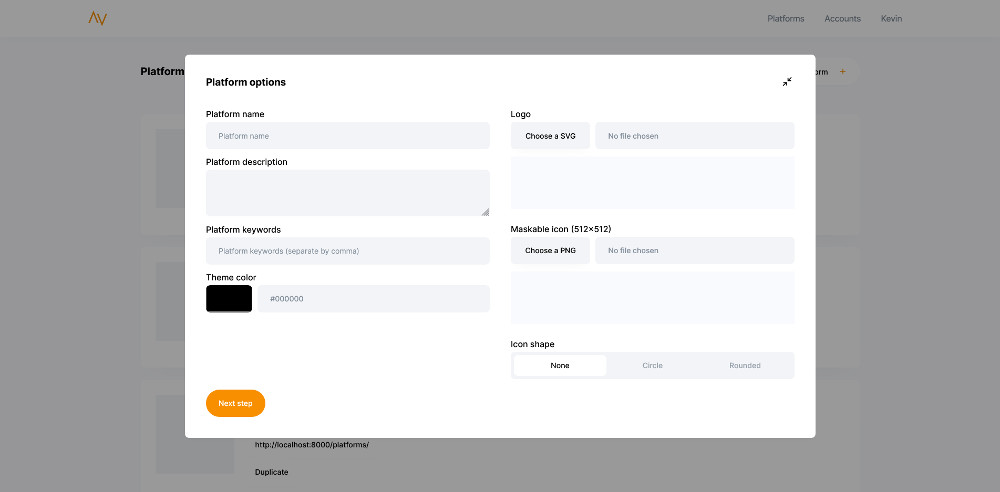
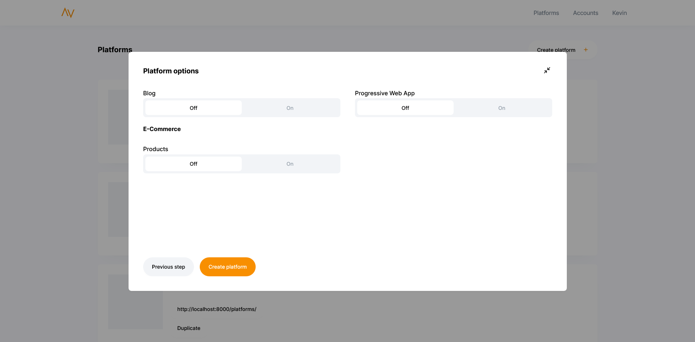
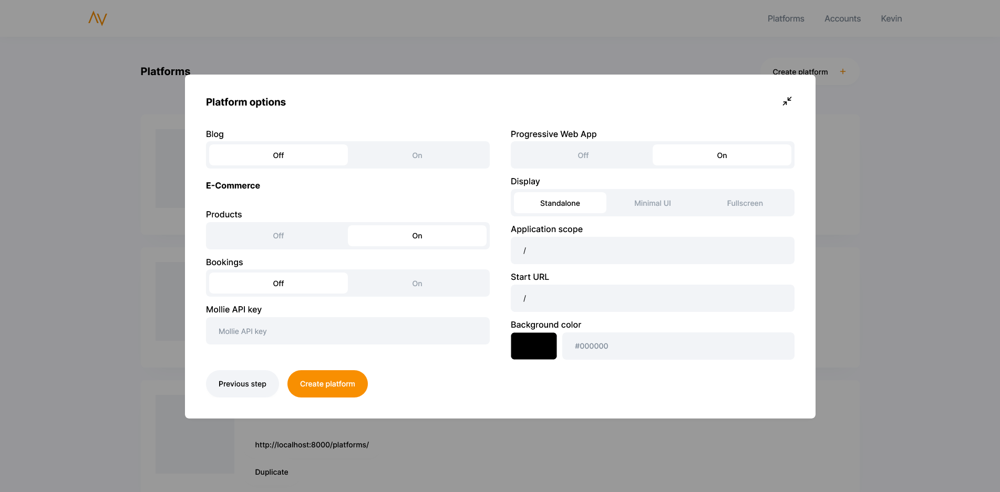

Getting Started
Deze pagina is een overzicht van de Platform Generator documentatie.
De Platform Generator is een applicatie waarmee een dynamische website/webshop gegenereerd kan worden. De platformen zijn opgesplitst in een front-end en back-end. De front-end is gemaakt in ReactJS en maakt gebruik van .JSX templates. De backend is een Headless CMS waarbij Strapi gebruikt wordt.
Nieuw platform genereren
Om een nieuw platform te genereren ga je naar Platform Generator, als deze niet live staat kan de Platform Generator vanaf localhost gehost worden. Log met een account in. Het test account is:
- Email: kevin@gravitymedia.nl
- Password: admin
Ga naar de pagina platforms en klik op Create platform. Nu opent er een formulier op de pagina. Vul alle gegevens van het platform in en upload een logo en maskable icon.

Zodra alle gegevens zijn ingevuld kunnen de opties van het platform worden ingevuld. Hier worden opties gevraagd zoals: Blog, Webshop of Bookingsysteem en Progressive Web App.

Als deze opties aan worden gezet kunnen er extra velden verschijnen. Deze variabelen kunnen altijd later ook nog worden aangepast.

Zodra de volgende stap wordt aangeklikt wordt het platform gegenereerd met de ingevoerde variabelen. Als eerste wordt er een platform map aangemaakt met de gekozen naam. Daarna wordt de front-end van Git gecloned. Hierna wordt de maskable icon omgezet in verschillende favicons voor verschillende apparaten, deze stap duurt even. Daarna wordt het logo toegevoegd aan de front-end. Door middel van het logo en de favicons kan er een manifest worden gemaakt. Voor dit manifest is ook een browserconfig nodig. Hierna wordt het .env bestand aangemaakt met de ingevoerde keuzes. En als laatste van de front-end wordt de package.json geïnstalleerd. Bij de backend wordt alleen de Git repo gecloned en de package.json geïnstalleerd. Zodra dit allemaal gebeurd is kan het development team aan de slag met coderen.
👍 Tip van Kevin
Mocht het zijn dat de installatie mislukt dan komt er een error in beeld. Hierin staat wat er verkeerd is en hoe het opgelost moet worden. Bijvoorbeeld dat de afbeeldingen niet aan de eisen voldoen of dat de naam van het platform al bestaat.
Het gegenereerde platform staat nu in de map `/platforms/` met de ingevoerde naam.
Ga nu naar front-end.